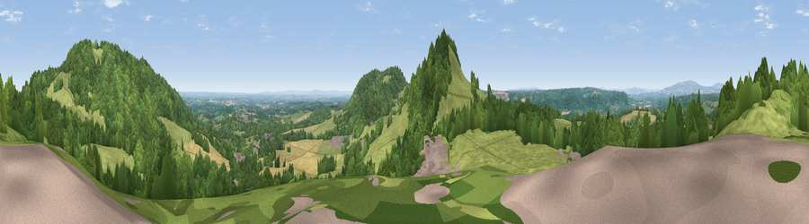

Viewpoint near The Common Abberley
#10783 in England · top 20% of its area beats it · near The Common AbberleyWhere it is
The exact computed spot (SO 74525 66425). Click the marker for map links.
The view, rendered

A 360° render of this exact spot computed from the terrain model, tree cover and land cover — summer colours, afternoon light, calibrated against photographs of famous viewpoints. Real trees, hedges and buildings will differ in detail.
The panorama
Grey silhouette: terrain skyline in each direction (720 bearings, Earth curvature and refraction included). Dashed green: skyline with trees (+15 m) and buildings (+8 m) as obstacles. Blue strip: how far the ground is visible on each bearing.
Where the view opens
Wedge length = distance to the farthest visible ground on that bearing (vegetation-aware). Rings at 10, 25 and 50 km.
What fills the view
45% woodland · 40% grassland · 10% cropland · 4% built-up
Angular shares of the visible panorama (visual magnitude), not map area. Landscape diversity 0.48 (0–1 Shannon).
Key numbers
More beautiful places nearby
The staircase of upgrades: each row has a higher view potential than everything closer. Driving times are estimates from straight-line distance, calibrated against real road routing — check an actual route before setting out.
| Place | Direction | Drive | Score |
|---|---|---|---|
| Walsgrove Hill | SSW · 1 km | ~2 min | 79.6 |
| Abberley Hill | NE · 1 km | ~3 min | 80.4 |
| Woodbury Hill | S · 2 km | ~5 min | 81.6 |
| Viewpoint near Great Witley | SSE · 2 km | ~6 min | 83.4 |
| Titterstone Clee | NW · 19 km | ~33 min | 83.8 |
| North Hill | S · 20 km | ~34 min | 86.8 |
| Worcestershire Beacon | S · 21 km | ~36 min | 87.1 |
| Viewpoint near West Quantoxhead | SSW · 139 km | ~162 min | 87.9 |
52.29536, -2.37496 · source: screening · position refined by local search. Computed location — check access rights before visiting.